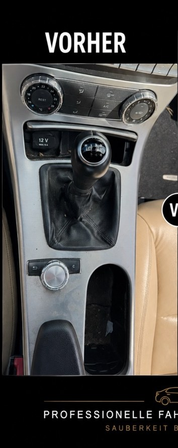
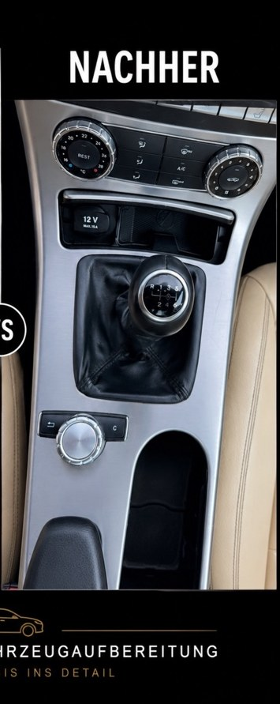
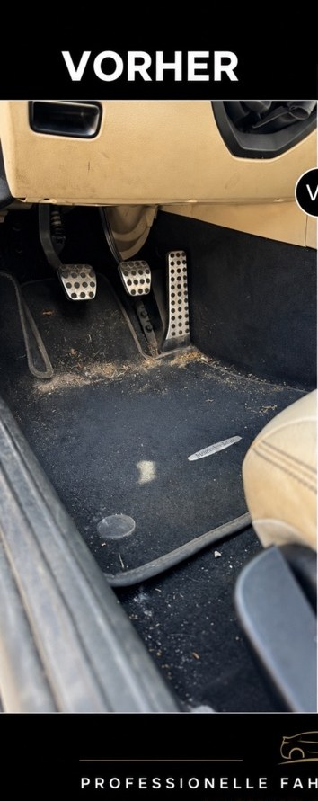
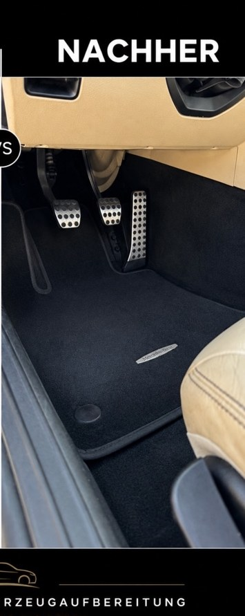
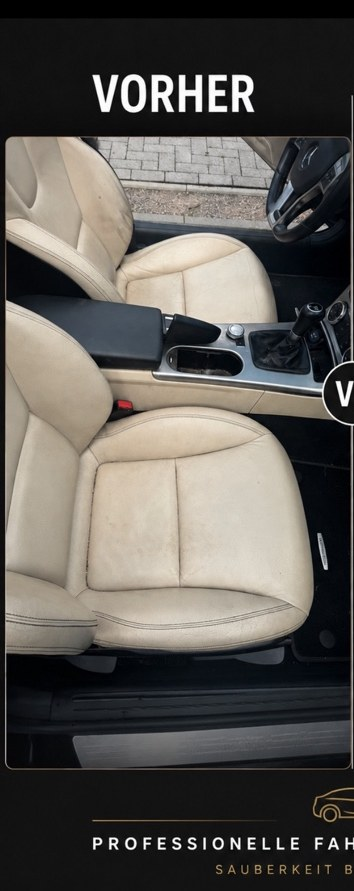
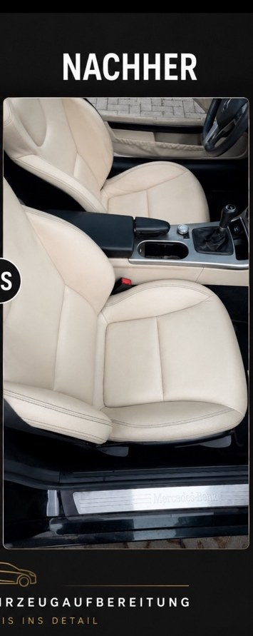
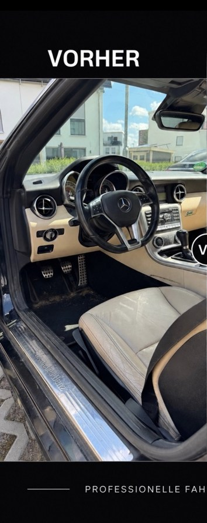
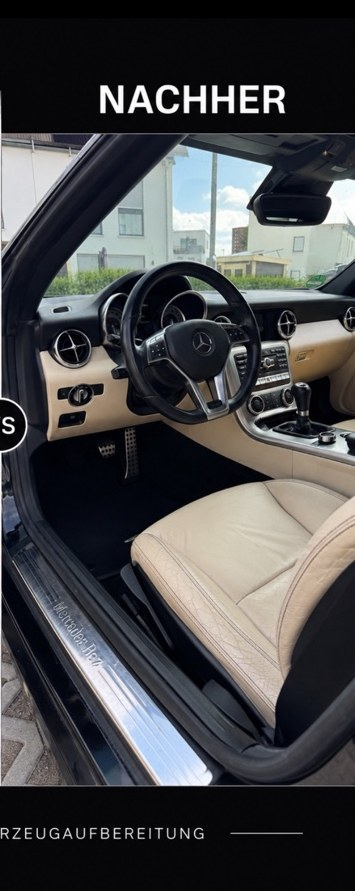

Interaktive Vergleiche aus realen Aufbereitungen.








Diese Website verwendet derzeit nur technisch notwendige Speicherung. Externe Inhalte werden erst nach deiner Zustimmung geladen.

 VORHERNACHHER
VORHERNACHHER
 VORHERNACHHERVORHERNACHHERVORHERNACHHER
VORHERNACHHERVORHERNACHHERVORHERNACHHER